By Elizabeth Dunlop Richter
“The carillon is, after all, the music of the people… It is a display of fireworks that one hears: flares, rockets, showers, a thousand sparks of sound which colour the air for visionary eyes alerted by hearing.”
–Georges Rodenbach, “The Bells of Bruges,” 1897
The Sunday afternoon was hot, 90 degrees, about 20 degrees above normal. But many hardy souls ventured out of the air conditioning on June 16 for a special outdoor treat: the third concert in St. Chrysostom’s Summer Carillon festival, celebrating the carillon’s recent major renovation.
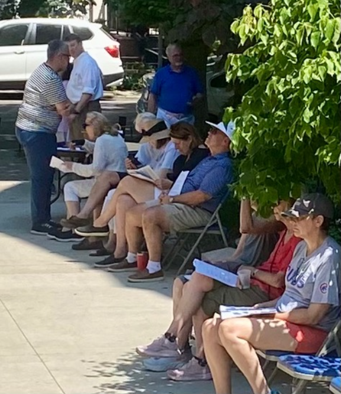
Carillon enthusiasts find shady corners for the final concert of the festival
St. Chrysostom’s Episcopal Church on Dearborn Street on the city’s north side has been known for it carillon, housed in a soaring tower, since 1927. Richard Teller Crane, Jr. donated the carillon to St. Chrysostom’s in honor of his parents. Crane’s family business, best known today for bathroom fixtures, originally manufactured a variety of brass and iron products including bells. The carillon is one of just five in Chicago, second in size only to the University of Chicago’s Rockefeller Chapel carillon, the second largest in the world.
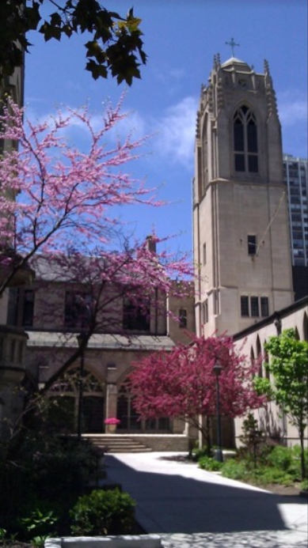
“I think the sound is just enchanting. I think that you are an anonymous person playing for a gigantic audience. I like the idea of serendipity… It’s part of the fabric of a person’s daily life,” said Amy Schafer, carillonist and consultant.
A carillon is defined by the Guild of the Carillonneurs in North America as “a musical instrument composed of at least 23 carillon bells arranged in a chromatic sequence…played from a keyboard that allows expression through variation of touch.” No, there are no monks in long robes pulling ropes attached to bells.
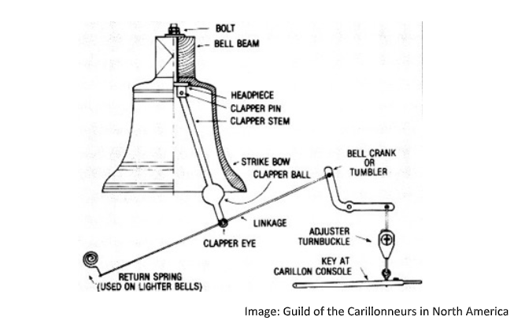
A carillon, by comparison, is a mechanism that connects a minimum of 23 bells to a keyboard played with both hands and feet, like an organ. Originating in the Netherlands (including today’s Belgium in the 17th century), the carillon spread throughout Europe. Today some 700 carillons exist, primarily in the Low Countries, with over 200 built in the United States, most in the 20th century.
The St. Chrysostom’s carillon mechanism offered many spots for problems. With no significance maintenance since its installation in 1927, the inner workings did not surprise Director of Music Richard Hoskins by the issues leading to the recent major renovation.
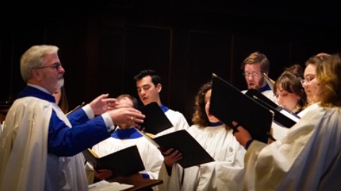
Richard Hoskins directs the choir
“The first thing was we didn’t know what was left of the bolts that held the bells to the frame,” said Hoskins. “We were shocked when they were taking the bells down at how badly the bolts had rusted. There were a couple that were pretty thin. The main problem was just that the mechanism was very out of regulation….the springs were no longer flexible…the mechanism was no longer flexible…the clappers had flattened where they hit the bell and so the sound wasn’t particularly pretty… There were some bells we couldn’t play because the linkage had broken… The clavier [keyboard] itself was failing.”
Carilloneurs (or the now more common, gender neutral “carillonists”) at St. Chrysostom’s have also known work was needed for years. Kim Schafer learned to love the carillon as a music major at the University of Michigan, which has two carillons. Trained at the Belgian Royal Carillon School with her doctorate from the University of Texas, she decided to move into higher education administration at the University of Chicago. She played the city’s largest carillon with other volunteers. She then set up her own carillon consulting firm, Community Bell Advocates, to advise clients on carillon repair and installation, teaching herself along the way. In 2015 she began playing at Saint Chrysostom’s. In 2017 she recruited Jim Fackenthal to join her in rotation playing the St. Chrysostom’s carillon, which had not been played on regular basis for years.
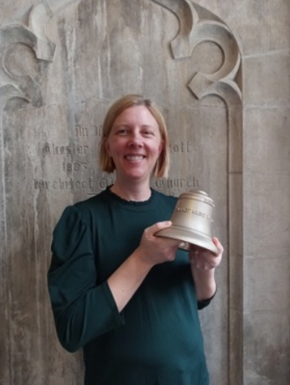
Kim Schafer, carillonist and carillon consultant for the renovationFackenthal, a professor of biological sciences and cancer researcher at Benedictine University, began learning the carillon at the University of Rochester. He too played the carillon at the University of Chicago and was delighted to play at St. Chrysostom’s, where he is now the chief carillonist. “I liked the idea that whoever was playing the carillon was always creating an audience of whoever was out on the main campus quad. People would come out of the buildings and be thinking about electrical engineering or Shakespeare, of what was for lunch, but as soon as the carillon played, they became an audience. It was an audience that didn’t have to put on a tie or going to a theater or buying a ticket; it wasn’t an audience that was paying attention to who was on stage because that person was anonymous. I thought that was a great way to bring music to people,” said Fackenthal.
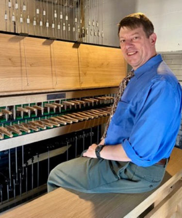
Jim Fackenthal at the clavier (keyboard)
But from the beginning, Schafer and Fackenthal knew the St. Chrysostom’s carillon was barely playable. “Many of the bells needed to be retuned, especially because during the earlier part of the 20th century there was so much coal soot accumulating on the surfaces of everything… You had to fight the resistance of the rust and the inefficient transition system…every note had its own problem…they were all stiff…over time the iron clappers striking against the brass bells got flattened so instead of a nice bong you got a clank,” said Fackenthal. Schafer and Fackenthal did some minor repairs to help it limp along.
A playing program was started to raise interest in a more major renovation. “Early on I would often bring up [with Hoskins and the rector, Rev. Wes Smedley] the state of disrepair the carillon was in…and that it desperately needed an overhaul and not a small overhaul, a massive one. It was beginning to be safety issue as well…rust on the iron on the parts that connected everything was the issue…The bells did need a little bit of renovation as well. Because of air pollution and bad tuning forks used originally, the top tiers of the bells had gone flat,” said Schafer. With her recommendation… and persistence, the decision was made to undertake a major upgrade.
The capital campaign included a small line item for the carillon. Fortunately, five donors stepped up to cover the nearly $600,000 cost, so the green light was given. Serious issues lay ahead. Schafer, now carillon consultant and project manager faced them head on. “One of the biggest challenges throughout the process was dealing with the very small space…to put the crane in, to put the lift in, to get the related work finished before the bells came back,” she said. First, all the bells had to be removed to address the mechanical issues, requiring moving large equipment in the courtyard. Virtually everything besides the bells was replaced.
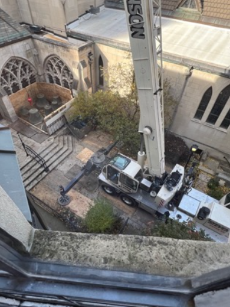
Two thirds of the bells were shipped to Royal-Eijabouts of Austen in the Netherlands for refurbishing and retuning. “You shave out small amounts of metal from the inside of the bell…it’s [removing] micro amounts of corrosion… that little bit of corrosion makes the bell go a little bit flat,” said Schafer. The largest bells remained in the church courtyard while work was being done in the tower.
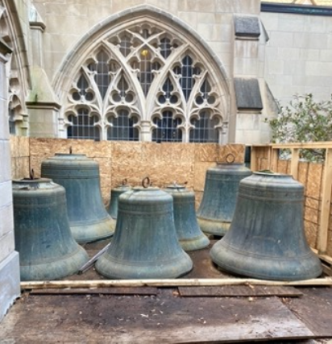
Five new bells were added in the upper register, moving the carillon from a 43-bell instrument to a 48-bell instrument, going from three and a half octaves to four. Four octaves are now the standard range of a carillon. This also provided an opportunity to add the names of each of the five donors plus a quotation to each new bell, a popular custom.
When the bells returned from the Netherlands, they rested in the Harding Room temporarily. A team from the Netherlands returned to re-install the refurbished bells in October of last year.
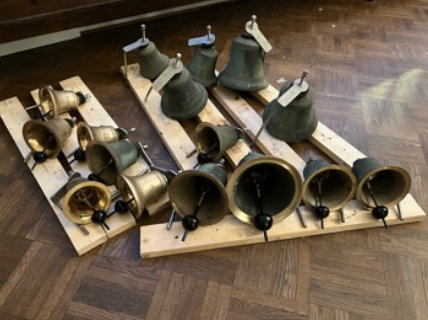
New round clappers hit bells in new places
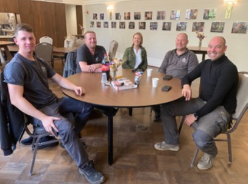
Dutch installation team relaxes in the Harding Room
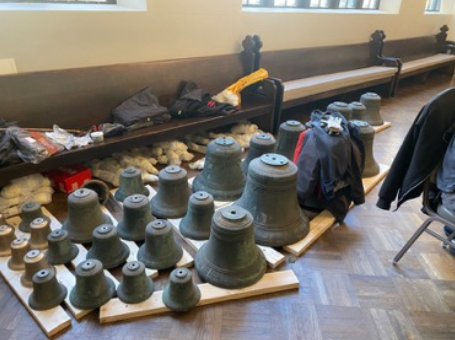
Hoskins is delighted with the results. “It went from trying to drive a semi-truck with no power steering to driving a Rolls Royce with one finger on the steering wheel…the bells just sound so beautiful. You can play extremely quietly you can pay extremely loudly. You have a big range of dynamics now. And you can play faster…the joy of hearing this beautiful sound coming out. People have been very excited about it and people continue to be thrilled.”
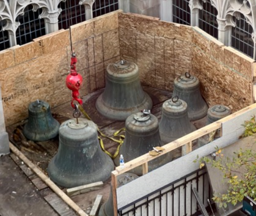
Refurbished bell about to be raised into positionSchafer, “I think it’s really gratifying because you have this sense of power over making this loud beautiful sound, this resonant sound that just hangs in the air…that’s what I like about it. You have a sense of responsibility for it because you’re playing for an audience that did not necessarily opt into your concert, so you want to be mindful about trying to play repertoire that is not just for yourself but that is for people who may encounter what you are playing.”
The renovated carillon is appreciated not only by the parish and the community but also by the carillonists: Fackenthal shared his “gratitude for the St. Chrysostom’s community, for the committee, for supporting the instrument, for the renovation and for allowing us to do the work we love doing.”
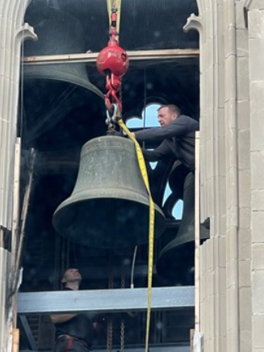
“You have different a sound world; it’s a wonderful world to explore because you have these wonderful bells and you can make them loud and you can make them soft and you can do everything expressively that you can do with the organ…it’s fun to take organ pieces and transcribe them for the carillon,” said Hoskins.
Fackenthal says the carillon is more popular with young musicians than ever before. Both Hoskins and Fackenthal are happy to take the mystery out of what makes the carillon play and invite you to set up a visit. Do you want to learn to play a carillon? Fackenthal will give you lots of options. So plan a trip to the carillon, think about a lesson and sure you are in shape to climb the stairs to the tower!